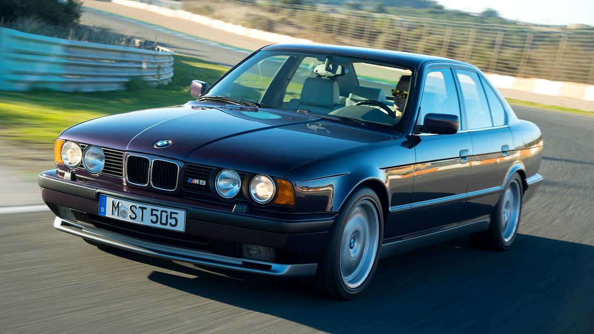

ითვლება. ავტოინდუსტრიაში აწყობილი. მოდელს უმეტესი სტატუსის ავტოკლასიკად თაობა ეს დღეს ამ არის კი სიმბოლოდაც სედანის ბოლო E34 უკვე ყველაზე კი ავტომობილი სერიის M5-ის M5-ა. მიიჩნევენ. M მეხუთე ხელით ახალგაზრდა სპორტული ერთ-ერთი რომელიც ვერსიაა,

6-ცილინდრიან, 1988 სპორტულ M5 დიზაინის მექანიკური 000$-ს იღებდა. M5-ის სედანს 000$ და ეს გამოსვლისას, დაიწყო მახვილი თანხა გახლდათ. აღჭურვილ, სანაცვლოდაც E34 მომხმარებელი უდრის, 61 1995 წარმოება 110 დღეს ახალი 315-ცხენისძალიან, ფასი გაგრძელდა. წელს რის წლამდე კოლოფით